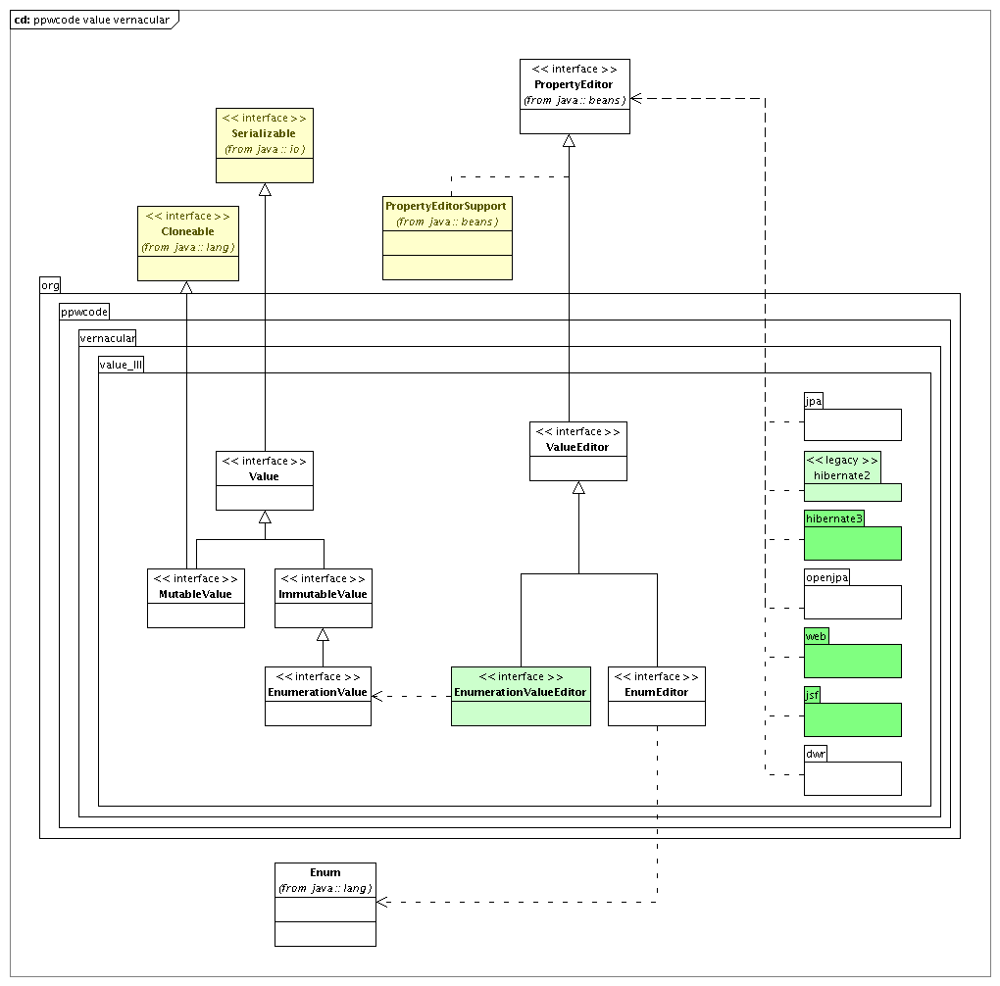

This package contains guidelines for implementing value type classes. General
things are defined in class Value,
MutableValue,
ImmutableValue and
EnumerationValue. Each value type
should implement one of these interfaces, or be a Java enum.
This package offers abstract classes that can be used as superclasses for value type implementations, that implement as much of the contract of values as possible.
Exceptions thrown in the context of value types should be or extend
ValueHelpers
and EnumHelpers.
For each value type you define, you need extra code that interacts with the context and framework you use in periphery. In a web application, you need code to transfor a value object to and from a String representation that can be carried in a HTTP request and response. In a desktop application, you need a way to edit properties of objects of value type. When object properties of a value type need to be persisted using a persistence technology, we need to explain to the technology how to do that. In the case of SQL-based persistent storage, we need to map the value type to SQL primitives. The code to do this is to be considered part of the definition of the value type, and should be offered in classes next to the value type. We expect that support is offered for the technologies the creator of a new value type uses at the moment of creation, and further support to be added when other people use the value type in other contexts. As such a value library will continuously ameliorate.
This package offers general support for the implementation of such peripheral interaction code for value types for
org.ppwcode.vernacular.value_N.jpa)org.ppwcode.vernacular.value_N.hibernate2
and org.ppwcode.vernacular.value_N.hibernate3)org.ppwcode.vernacular.value_N.openjpa)org.ppwcode.vernacular.value_N.web)For simple value types, the interaction with the periphery most often revolves around transforming a value instance to and from a programmatic String representation of that value. There are many different frameworks around to do this, that all basically to the same thing. We have choosen for simple types always to implement a standard Java SE {@link java.beans.PropertyEditor}. For all the other peripheral technologies we than have an implementation of user types, value handlers, converters and the likes that delegate transformation to an appropriate {@link java.beans.PropertyEditor} instance for the given value type. This essentially makes it possible for simple value types that have a String programmatic representation to be able to perform in any supported peripheral context when we only have to program an appropriate {@link java.beans.PropertyEditor}, or even only have to code the value type according to patterns explained in the interfaces for value types.
For more complex value types, we need separate code for each peripheral technology, or a more ad hoc generalization is to be created.